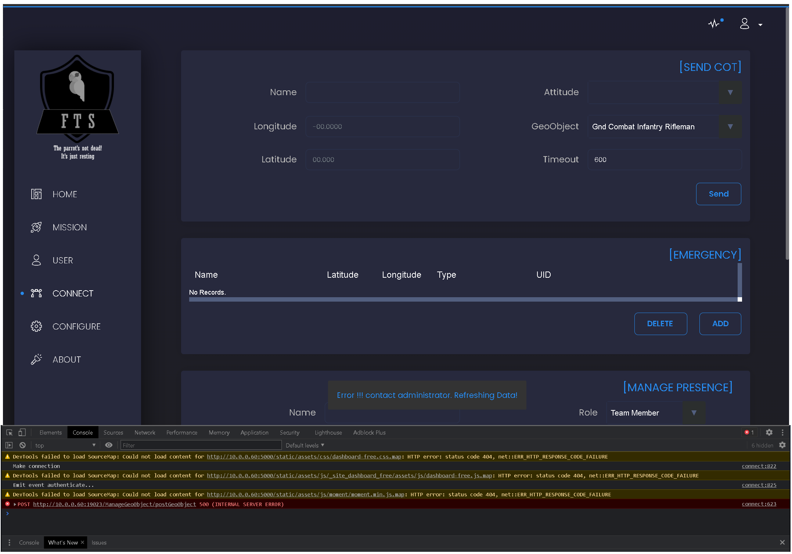

FreeTAKServer Install On Windows Computer
Below is the installation commands and comments for the installation of FreeTAKServer on a Windows computer. Please notice, the FTS team is not supporting Windows as an official OS for FTS. Please contact the original authors.
FreeTAKServer Manager For Windows
FreeTAKServer Manager has the ability to Start, Stop, Restart, Install, and Uninstall the FreeTAKServer & FreeTAKServer-UI.
release version 1.5.12
FreeTAKServer provides Situational Awareness and other capabilities such as:
- sci-fi themed Web Administration
- SSL Encryption Management
- Health Monitor
- Dynamically change IP / ports, start, stop FTS services from web UI
- Service management
- Federation Service (Connecting two or more FTS or TAK server instances)
- Data Package upload and retrieval
- Private data package (user to user)
- Image transfer and storage
- CoT recording in a database
- Execution of common task list (using the
ExCheckplugin forWinTAK;ATAKplugin only available to users withtakmaps.comaccess) - User Management
- Command Line Interface
- REST API for creation of information such as emergency, Enemy units and so on
The preferred way to install FTS is by using Pip, that would solve all the required dependencies. The offline release requires additional manual work and has to be used only in the cases where internet connection is not available.
Install Instructions
Install python 3.11 from python.org
Download and run the installer. The current version is 3.12, but it makes use of Cython 3.x which is incompatible with several of the libraries used by FTS.
Choose the installer option.

Check pip, tcl/tk and IDLE and the Python test suite.

Make sure you add Python to environment variables for easy use.

Verify python environment
Check that python and pip are installed and working correctly. You should be able to open cmd anywhere and do this check:
python -V
pip --version

Install Python packages
Having checked that Python and pip are working install the requirements:
- Perform install one by one via pip.
pip install flask
pip install flask_login
pip install flask_migrate
pip install flask_wtf
pip install flask_sqlalchemy
pip install email_validator
pip install waitress
pip install coveralls
pip install coverage
pip install pytest
pip install flake8
pip install flake8-print
pip install pep8-naming
pip install selenium
- (alternate) Perform install from a file.
From a file Paste these requirements into a .txt file requirements.txt for example:
flask
flask_login
flask_migrate
flask_wtf
flask_sqlalchemy
email_validator
waitress
coveralls
coverage
pytest
flake8
flake8-print
pep8-naming
selenium
Now change into the directory (cd) containing said requirements.txt file and run the command:
pip install -r requirements.txt
-
Install FreeTAKServer When all the requirements have been satisfied install the FreeTAKServer and FreeTAKServerUI.
pip install FreeTAKServer pip install FreeTAKServer-UI -
https://pypi.org/project/FreeTAKServer/
- https://pypi.org/project/FreeTAKServer-UI/
Configure the FTS
After the installation has finished the server and UI may need some configuration.
The FTS server is configured with MainConfig.py.
MY PATH EXAMPLE
C:\Software\python\Lib\site-packages\FreeTAKServer\controllers\configuration\MainConfig.py
# -*- encoding: utf-8 -*-
import os
from pathlib import Path
currentPath = os.path.dirname(os.path.abspath(__file__))
class MainConfig:
"""
this is the main configuration file and is the only one which
should need to be changed
"""
# this is the port to which clients will connect
CoTServicePort = int(8087)
SSLCoTServicePort = int(8089)
# this needs to be changed for private data packages to work
DataPackageServiceDefaultIP = str("0.0.0.0")
# User Connection package IP needs to be set to the IP which is used when creating the connection in your tak device
UserConnectionIP = str("0.0.0.0")
# python_version = 'python3.8'
# userpath = '/usr/local/lib/'
# api port
APIPort = 19023
# Federation port
FederationPort = 9000
# api IP
APIIP = '0.0.0.0'
# allowed ip's to access CLI commands
AllowedCLIIPs = ['127.0.0.1']
# IP for CLI to access
CLIIP = '127.0.0.1'
# whether to save CoT's to the DB
SaveCoTToDB = bool(True)
# this should be set before startup
DBFilePath = str(r'C:\\Software\\python\\Lib\\site-packages\\FreeTAKServer\\FTSDataBase.db')
# the version information of the server (recommended to leave as default)
version = 'FreeTAKServer-1.5.12 RC1'
MainPath = str(Path(fr'C:\\Software\\python\\Lib\\site-packages\\FreeTAKServer'))
ExCheckMainPath = str(Path(fr'{MainPath}\\ExCheck'))
ExCheckFilePath = str(Path(fr'{MainPath}\\ExCheck\\template'))
ExCheckChecklistFilePath = str(Path(fr'{MainPath}\\ExCheck\\checklist'))
DataPackageFilePath = str(Path(fr'{MainPath}\\FreeTAKServerDataPackageFolder'))
# format of API message header should be {Authentication: Bearer 'TOKEN'}
from uuid import uuid4
id = str(uuid4())
nodeID = f"FreeTAKServer-{id}"
# set to None if you don't want a message sent
ConnectionMessage = f'Welcome to FreeTAKServer {version}. The Parrot is not dead. It’s just resting'
keyDir = str(Path(fr'{MainPath}\\certs\\pubserver.key'))
pemDir = str(Path(fr'{MainPath}\\certs\\pubserver.pem')) # or crt
unencryptedKey = str(Path(fr'{MainPath}\\certs\\pubserver.key.unencrypted'))
p12Dir = str(Path(fr'{MainPath}\\certs\\pubserver.p12'))
CA = str(Path(fr'{MainPath}\\certs\\ca.pem'))
CAkey = str(Path(fr'{MainPath}\\certs\\ca.key'))
federationCert = str(Path(fr'{MainPath}\\certs\\pubserver.pem'))
federationKey = str(Path(fr'{MainPath}\\certs\\pubserver.key'))
federationKeyPassword = str('defaultpass')
# location to back up client packages
clientPackages = str(Path(fr'{MainPath}\\certs\\ClientPackages'))
password = str('defaultpass')
websocketkey = "YourWebsocketKey"
The FTS server UI is configured with config.py.
MY PATH EXAMPLE
C:\Software\python\Lib\site-packages\FreeTAKServer-UI\config.py
# -*- encoding: utf-8 -*-
"""
License: MIT
Copyright (c) 2019 - present AppSeed.us
"""
import os
from os import environ
class Config(object):
basedir = os.path.abspath(os.path.dirname(__file__))
SECRET_KEY = 'key'
# This will connect to the FTS db
SQLALCHEMY_DATABASE_URI = 'sqlite:///' + 'C:\\Software\\python\\Lib\\site-packages\\FreeTAKServer\\FTSDataBase.db'
# certificates path
certpath = "C:\\Software\\python\\Lib\\site-packages\\FreeTAKServer\\certs\\"
# crt file path
crtfilepath = f"{certpath}pubserver.pem"
# key file path
keyfilepath = f"{certpath}pubserver.key.unencrypted"
# this IP will be used to connect with the FTS API
IP = '127.0.0.1'
# Port the UI uses to communicate with the API
PORT = '19023'
# the public IP your server is exposing
APPIP = '127.0.0.1'
# this port will be used to listen
APPPort = 5000
# the webSocket key used by the UI to communicate with FTS.
WEBSOCKETKEY = 'YourWebsocketKey'
# the API key used by the UI to communicate with FTS. generate a new system user and then set it
APIKEY = 'Bearer token'
# For 'in memory' database, please use:
# SQLALCHEMY_DATABASE_URI = 'sqlite:///:memory:'
SQLALCHEMY_TRACK_MODIFICATIONS = False
# THEME SUPPORT
# if set then url_for('static', filename='', theme='')
# will add the theme name to the static URL:
# /static/<DEFAULT_THEME>/filename
# DEFAULT_THEME = "themes/dark"
DEFAULT_THEME = None
class ProductionConfig(Config):
DEBUG = False
# Security
SESSION_COOKIE_HTTPONLY = True
REMEMBER_COOKIE_HTTPONLY = True
REMEMBER_COOKIE_DURATION = 3600
# PostgreSQL database
SQLALCHEMY_DATABASE_URI = 'postgresql://{}:{}@{}:{}/{}'.format(
environ.get('APPSEED_DATABASE_USER', 'appseed'),
environ.get('APPSEED_DATABASE_PASSWORD', 'appseed'),
environ.get('APPSEED_DATABASE_HOST', 'db'),
environ.get('APPSEED_DATABASE_PORT', 5432),
environ.get('APPSEED_DATABASE_NAME', 'appseed')
)
class DebugConfig(Config):
DEBUG = True
config_dict = {
'Production': ProductionConfig,
'Debug': DebugConfig
}
Start the Server
In order to run the server and the GUI two terminal windows must be opened and the commands below must be run:
SERVER START COMMAND
python -m FreeTAKServer.controllers.services.FTS
UI START COMMAND
cd C:\\Software\\python\\Lib\\site-packages\\FreeTAKServer-UI
set FLASK_APP=run.py
flask run
Connect to the Server
Now your server should be running.
User = admin, Password = password and GUI link http://localhost:5000/
Notes
Start FTS During System Start
If you would like to set up a Batch file (to run the server on a double click) use the commands below:
Create a .bat file to run the server on double click and on startup:
StartFreeTAKServer.bat
::START THE SERVER
ECHO ON
start cmd /k python -m FreeTAKServer.controllers.services.FTS
::WHEN RUNNING THE SCRIPT FROM A DIFFERENT DRIVE ADD THE `/D` SWITCH TO YOUR CD COMMAND
CD C:\Software\python\Lib\site-packages\FreeTAKServer-UI
set FLASK_APP=run.py
flask run
pause
WINDOWS + R) and Type shell:startup,
and paste a copy of your StartFreeTAKServer.bat file there.
ERRORS
CoT error v1.5.13

More Info
FreeTAKServer documentation for end users
| Description | Link |
|---|---|
| User Docs: | https://freetakteam.github.io/FreeTAKServer-User-Docs/ |
| PyPi Install Docs: | https://freetakteam.github.io/FreeTAKServer-User-Docs/Installation/PyPi/Linux/Install/ |
| Server Download: | https://github.com/FreeTAKTeam/FreeTakServer |
| Server Releases: | https://github.com/FreeTAKTeam/FreeTakServer/releases |
RPiFTS Series
GHOST_DA-B6 has created a set of videos on youtube detailing how to install and set up FTS on raspberry pi SBC's.
You can view his RPiFTS video series on his channel.